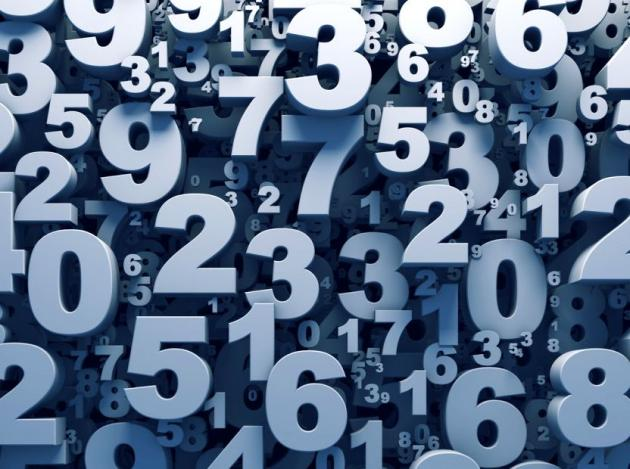

Квадрат Пифагора
Так называемая «психоматрица», придуманная древнегреческим ученым Пифагором, относится к самым популярным расчетам в нумерологии. Она помогает определить: силу характера, энергетику, здоровье, интеллект и другие врожденные качества.